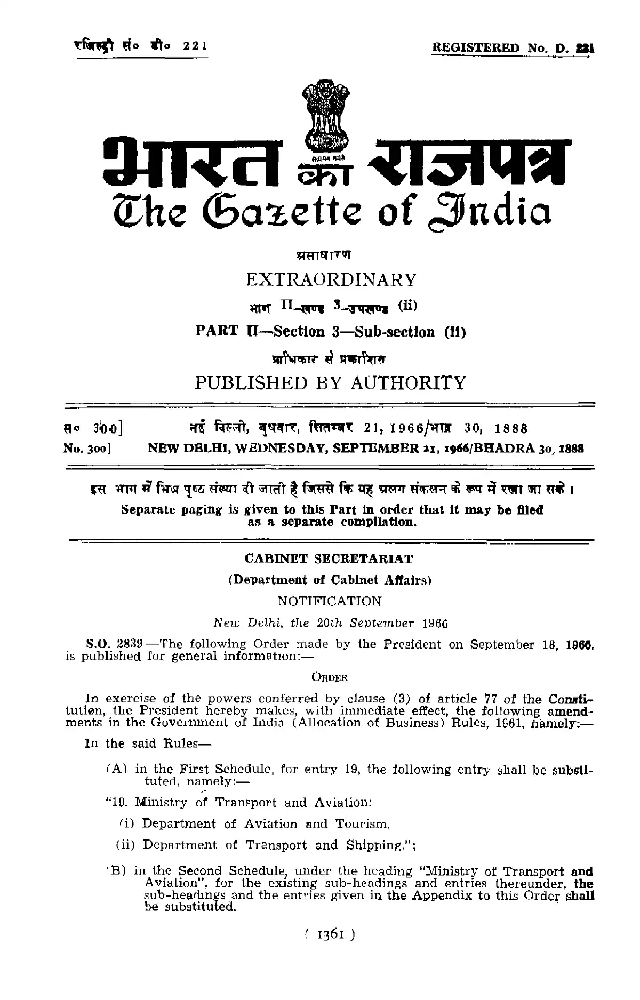
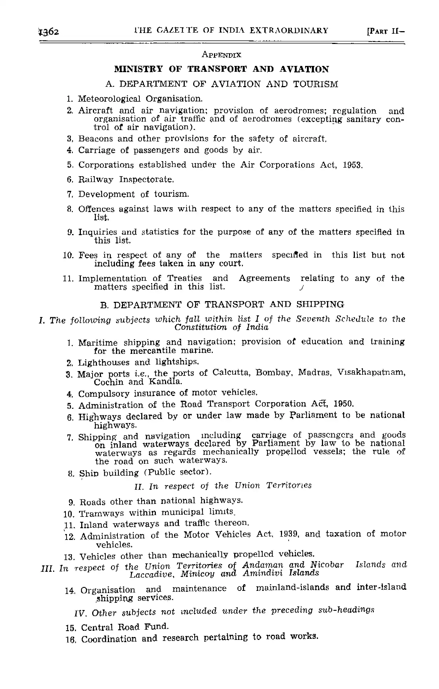
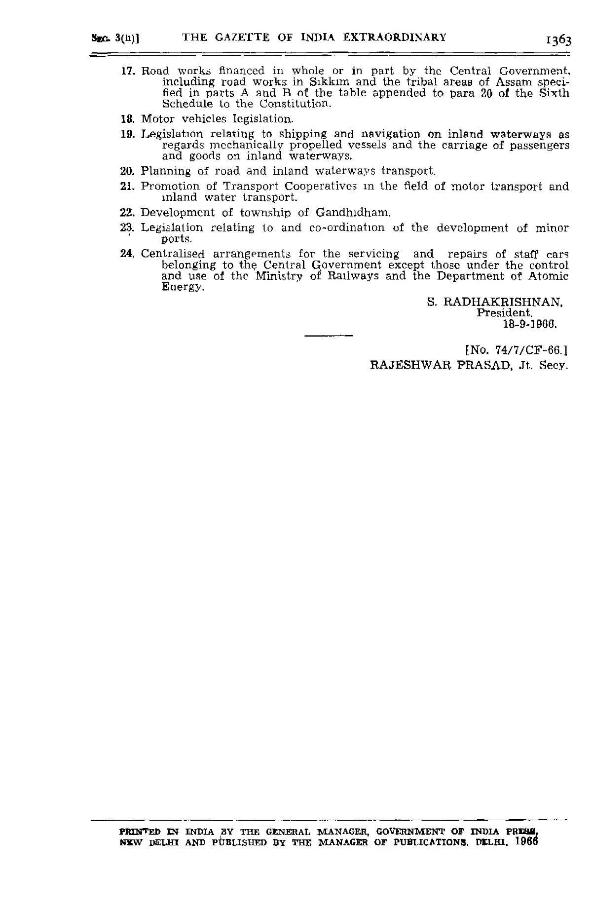

Amendment #54 (S.O. 2839, 1966)
2 changes: 1 to the First Schedule, 1 to the Second Schedule. 2 applied
The order, page by page
Page 1 of 4

12Schedule 1 › entry 19
- 19. Ministry of Transport and Aviation :
- i. Department of Aviation and Tourism.
- ii. Department of Transport and Shipping.
applied at schedule 1 › ministry 19 in the Rules after #54
read hindi missing
Schedule 2 › Ministry of Transport and Aviation
- MINISTRY OF TRANSPORT AND AVIATION
- A. DEPARTMENT OF AVIATION AND TOURISM
- 1. Meteorological Organisation.
- 2. Aircraft and air navigation; provision of aerodromes; regulation and organisation of air traffic and of aerodromes (excepting sanitary control of air navigation).
- 3. Beacons and other provisions for the safety of aircraft.
- 4. Carriage of passengers and goods by air.
and 36 more
- 5. Corporations established under the Air Corporations Act, 1953.
- 6. Railway Inspectorate.
- 7. Development of tourism.
- 8. Offences against laws with respect to any of the matters specified in this Ilst.
- 9. Inquiries and statistics for the purpose of any of the matters specified in this list.
- 10. Fees in respect of any of the matters specified in this list but not including fees taken in any court.
- 11. Implementation of Treaties and Agreements relating to any of the matters specified in this list.
- B. DEPARTMENT OF TRANSPORT AND SHIPPING
- 1. The following subjects which fall within list I of the Seventh Schedule to the Constitution of India
- 1. Maritime shipping and navigation; provision of education and training for the mercantile marine.
- 2. Lighthouses and lightships.
- 3. Major ports i.e., the ports of Calcutta, Bombay, Madras, Visakhapatnam Cochin and Kandla.
- 4. Compulsory insurance of motor vehicles.
- 5. Administration of the Road Transport Corporation Act, 1950.
- 6. Highways declared by or under law made by Parliament to be national highways.
- 7. Shipping and navigation including carriage of passengers and goods on inland waterways declared by Parliament by law to be national waterways as regards mechanically propelled vessels; the rule of the road on such waterways.
- 8. Ship building (Public sector).
- II. In respect of the Union Territories
- 9. Roads other than national highways.
- 10. Tramways within municipal limits
- 11. Inland waterways and traffic thereon.
- 12. Administration of the Motor Vehicles Act, 1939, and taxation of motor vehicles.
- 13. Vehicles other than mechanically propelled vehicles.
- III. In respect of the Union Territories of Andaman and Nicobar Islands and Laccadive, Minicoy and Amindivi Islands
- 14. Organisation and maintenance of mainland-islands and inter-island shipping services.
- IV. Other subjects not included under the preceding sub-headings
- 15. Central Road Fund.
- 16. Coordination and research pertaining to road works. SEC. 3(11)] THE GAZETTE OF INDIA EXTRAORDINARY
- 17. Road works financed in whole or in part by the Central Government including road works in Sikkim and the tribal areas of Assam specifiled in parts A and B of the table appended to para 20 of the Sixth Schedule to the Constitution.
- 18. Motor vehicles legislation.
- 19. Legislation relating to shipping and navigation on inland waterways as regards mechanically propelled vessels and the carriage of passengers and goods on inland waterways.
- 20. Planning of road and inland waterways transport.
- 21. Promotion of Transport Cooperatives in the field of motor transport and inland water transport.
- 22. Development of township of Gandhidham.
- 23. Legislation relating to and co-ordination of the development of minor ports.
- 24. Centralised arrangements for the servicing and repairs of staff cars belonging to the Central Government except those under the control and use of the Ministry of Railways and the Department of Atomic Energy.
applied at schedule 2 › ministry Ministry of Transport and Aviation in the Rules after #54
read hindi missing, read page break
Page 2 of 4

Page 3 of 4

Page 4 of 4
How this document was read
Edits to the reading
| Date | By | Edit | Before → after |
|---|---|---|---|
| 14 November 2026 | mukundesh | word corrected |
From the Government of India (Allocation of Business) Rules, 1961 and their amendments, as published by the Cabinet Secretariat (cabsec.gov.in), read by orgpedia. The readings of the older scanned gazettes have known gaps.